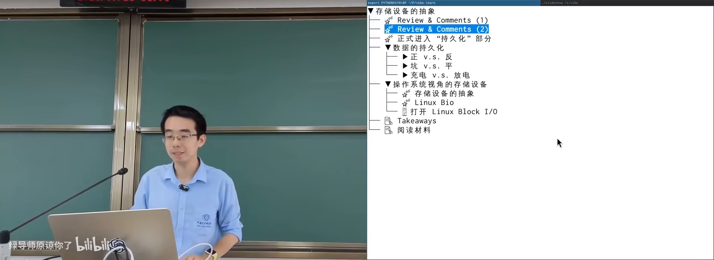
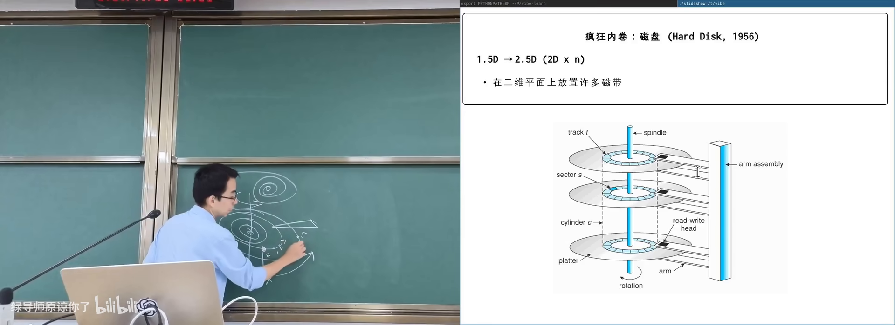
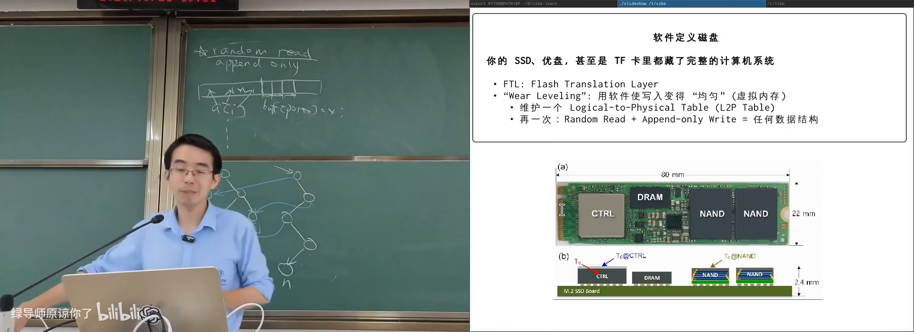

原视频：Bilibili · BV1RHLh6pEqn（时长约 80 分钟） 课程：南京大学《操作系统原理》（2026）第 23 讲 整理说明：本书由视频字幕经 AI 重构而成；口语已转为书面语；关键时间点标注 (参考时间)，截图卡片可跳转视频对应位置。
1. 开幕：AI 原生时代的“超级个体”
(参考时间: 00:00)
课前以一则招聘（DeepSeek 等团队的 Agent / harness 研发）切入：岗位要求“在 AI 辅助下，在没有直接经验的领域进行有质量保障的编程”。传统“先学会再动手”的路径正在被重写——更重要的是知道世界上有什么机制、你能提出什么问题。
本讲主题：一个 bit 如何持久化，以及操作系统如何把存储设备抽象成块设备。
持久化（persistence，在断电或时间流逝后仍能保存的信息）不限于几千年后的考古（石刻、甲骨文），也包括手机关机后你今天的照片与文档。
童年玩具「磁性画板」就是一种持久化：铁粉被磁笔吸到表面成像，底部磁铁扫过后复位——只要有一个可反复改写且可读出的状态，就能 persist。计算机要求更严：每个 bit 必须能用电读写。

课堂实物：硬盘、NVMe、磁带、软盘与光盘在 B 站打开 (00:04:00)
2. 从磁带到磁盘：磁性存储
(参考时间: 00:02:03)
2.1 磁带（tape）
近百年历史：一维（现代磁带有多磁道）介质上粘附铁磁单元，用磁场方向表示 0/1；磁头靠电磁感应读出电流方向，用强磁场写入。
早期形态：纸带 + 铁磁体；小霸王学习机时代仍可用磁带保存 BASIC 程序（音频信号转写）。
现代磁带的优点：
| 优点 | 说明 |
|---|---|
| 密度极高 | 纳米级磁畴，可达约 300GB/平方英尺、单卷数十 TB 量级 |
| 成本低 | 主要是结晶介质，工艺相对集成电路简单 |
| 可靠性高 | 固态晶体结构，可存放数十年 |
| 顺序读写尚可 | 磁头跟得上时吞吐不差 |
致命缺点：随机读写极差——定位要把很长的磁带卷过去再卷回来。因此磁带适合冷数据归档、备份，以及本来就顺序消费的音视频（磁带 A/B 面、倒带重听是时代记忆）。
若把磁带映射进地址空间再随机指针访问，延迟会高到不可用。
2.2 磁鼓（drum）
改进：把一维磁带绕成圈，硬质鼓面高速旋转，多磁道并行布置读写头。
- 最坏延迟 ≈ 等待旋转一周；
- 转速可达每分钟千转量级；
- 从“一维内卷”变成“1.5 维内卷”。
2.3 机械硬盘（HDD）
再进一步：把一圈圈“磁带”铺在二维盘片上：
- 多盘片、双面读写；
- 读写头可径向移动切换磁道，盘片旋转带来周向定位；
- 密封环境、高转速（5400/7200 RPM 等）；
- 垂直磁记录等工艺进一步提高面密度。
特点：
- 便宜、容量大、介质稳定；
- 怕震动：跌落时磁头可能划伤盘片（消费级笔记本风险；机柜内相对稳定）；
- 顺序读写好；随机读写需寻道 + 等待旋转，可达毫秒级（约 8ms 对现代 CPU 很长）；
- 可数据恢复：盘片结构稳定，控制器坏了仍可能拆盘读取（SSD 颗粒损坏则往往不可逆）。
磁盘内部已集成控制器（自带小计算机）：请求排队、电梯式寻道等调度在盘内完成。对外仍是大字节序列。

机械硬盘：盘片、磁道与磁头在 B 站打开 (00:20:00)
2.4 软盘（floppy disk）
- 5.25 英寸盘片较软，驱动器读写头从窗口读取；
- 3.5 英寸外壳更硬，有保护盖与写保护拨片（光电传感器检测）；
- 驱动器成本低，介质密度与性能低于硬盘；
- 1980–90 年代人际传数据的主力：DOS 曾装在一张 1.44MB 软盘上；《仙剑》等游戏多盘发行，玩到一半要“请插入下一张软盘”。
今天 Office/WPS 保存图标仍是软盘剪影——时代的吉祥物。
3. 挖坑存储：光盘与更极端的方案
(参考时间: 00:36:21)
石碑、Rosetta Stone：在稳定介质上挖坑即可表示 bit（有坑/无坑）。现代工业把坑挖到肉眼不可见。
3.1 光盘（CD/DVD/Blu-ray）
- 坑在塑料层；激光照射产生干涉/反射差异 → 读出 0/1；
- 数字编码（如 8–14 调制）+ 纠错；
- 早期黑胶是模拟槽纹记录声波振动，杠杆放大还原声音；
- CD 由索尼/飞利浦等为数字音频设计，容量约对应贝多芬第九交响曲长度（约 700MB 一代 CD）。
复制革命（压盘）：
- 做带凸起的母盘/钢模；
- 塑料压模 → 镀反射膜 → 数百 MB 数据数秒写完；
- 工厂并行压盘，等效写入吞吐可极高。
因此软件、电影、随书光盘大规模分发；课堂展示 Win98 盗版盘、驱动盘、教材示例代码盘等。
特点：成本极低、容量不低、可靠性尚可（划痕多在塑料面，坑在另一侧）；缺点是随机读性能差（开放旋转结构）、写入困难、母盘不可改——在“随时可更新 + 网络下载”的时代逐渐退出主流。
3.2 Persistent data structure：只追加也能变一切
计算机科学问题：有 random read 的存储，但只允许 append-only（只能往后写）——如何实现任意可读写数据结构？
以二叉树插入为例：不改旧节点，只复制从根到插入点的 O(log n) 路径，新根指向新路径，未改动的子树指针仍指旧节点。
- 空间代价 O(log n)；
- 历史版本全部保留（拿到旧根就是旧树）；
- 这类结构叫 persistent data structure（持久化数据结构——与存储介质语义双关）。
3.3 Project Silica：玻璃里挖坑
微软等探索：用聚焦激光在玻璃内部改变晶体结构写入 bit，append-only；读出靠光学定位。配套机器人图书馆做三维定位与取放。
配方仍是：random read + append-only write = 任意数据结构；只是介质换成玻璃、寻址换成机器人。是否商用取决于成本，但说明“存储创新仍在发生”。
4. 闪存和 SSD
(参考时间: 00:53:41)
磁/坑都有机械定位代价。高性能电子计算机需要：电路密度 + 电路速度。
4.1 Flash memory：电路里的坑
闪存（用浮栅等结构存住电子来表示 bit 的集成电路存储）与 MOS 管类似，多一个 floating gate：充电/放电表示 0/1；还可精确控制电荷量，在一个 cell 里存多个 bit（TLC 3bit、QLC 4bit 等）。
优点近乎“不讲道理”：
- 集成电路量产后价格可接受；
- 密度高、全固态封装（不怕水、灰尘，相对耐摔）；
- 并行扩展性好：多颗颗粒多份带宽（评测里 1TB 常快于 512GB）。
2006 年前后 Jim Gray 等已预见：flash 终将大量取代磁盘类设备。普及功臣其实是 U 盘（USB 接口 + 闪存芯片封装的专利思路），2000 年前后开始替代软盘成为交换媒介。
4.2 致命伤：擦写寿命与 FTL
放电放不干净 → cell 逐渐进入不可用状态（wear out）。QLC 级 cell 可能只有约千次擦写量级。若“逻辑第 1 块”永远写同一物理 cell，文件很快损坏——但你很少遇到，因为：
SSD/U 盘/TF 卡内都有完整小计算机（主控 CPU + DRAM + 固件），其中关键软件是 FTL（Flash Translation Layer，把逻辑块号翻译到物理块的闪存转换层）：
- 维护 logical → physical 映射表（类似 page table）；
- 再次写同一逻辑块时写到新物理块，改映射；
- wear leveling（磨损均衡：把写入摊到所有物理块）；
- 映射表自身也要持久化 → 用 append-only / 类似 persistent data structure 的方式实现。

SSD 主控与 FTL：逻辑块到物理块的映射在 B 站打开 (01:02:30)
廉价假盘风险：主控可被改写，把 64GB 颗粒伪装成 1TB——初用正常，超出真实容量后数据静默丢失。协议层的容量查询、健康信息都可伪造——“不要买便宜到不正常的存储”。
4.3 操作系统视角：块设备
设备再复杂，OS 侧常简化为 block device（以固定大小块读写的存储设备接口）：
- 块大小常见 512B / 4KB / 16KB 等；
- 目的：摊薄寻址电路成本（磁盘的磁头/转轴、闪存的行列选通）；
- 接口主要是
read_block/write_block（及 flush 等一致性相关操作）。
struct block_device_operations {
// 读一块、写一块……
};
实现了块读写后，read/write/mmap 等文件语义由 OS 再向上构建。
代价：读写放大——只改 1 字节也要整块读出、改写回；NVMe 等新接口开始允许更直接操作内部结构以减轻放大。
课堂用 AI + eBPF 类工具观察真实系统上的 block 读写（find、写大文件时的读写颜色分布）：从 first principle（“磁盘读写一定由代码实现，故可观测”）出发，即便没有直接经验也可做出可用工具。
5. 小结
| 介质 | bit 物理形态 | 随机访问 | 典型场景 |
|---|---|---|---|
| 磁带 | 磁畴方向 | 很差 | 冷归档、顺序流 |
| 磁鼓/软盘 | 旋转磁介质 | 中等偏差 | 历史：交互与传数据 |
| HDD | 盘片磁道 | 毫秒级 | 大容量温数据 |
| 光盘 | 坑/反射 | 较差，难写 | 分发（渐退） |
| Flash/SSD | 浮栅电子 | 好，可并行 | 主力热/温数据 |
| 玻璃等 | 材料相变 | 依赖机械 | 探索中的长期存档 |
下节课起：块设备之上如何形成文件系统——从“读写块”到人类与程序使用的目录树。
附录：概念补给
persistence（持久化）
- 是什么：信息在断电、关机、时间流逝后仍可读回。
- 课上为何出现：存储设备要解决的根本问题。
- 和什么像：刻在碑上比写在沙上更“持久”。
磁带 tape
- 是什么：顺序访问为主的磁性条带存储。
- 课上为何出现：最古老的现代存储之一，密度与归档价值高。
- 和什么像：一长卷电影胶片，要快进快退才能到目标帧。
扇区 sector / 块 block
- 是什么：设备一次定位读写的数据单元（如 512B）。
- 课上为何出现：用分组摊薄寻址成本，形成 block device 抽象。
- 和什么像：图书馆按整箱调书，而不是一本书一本书找。
block device
- 是什么：OS 对存储设备“按块读写”的统一接口。
- 课上为何出现：文件系统之下的设备层抽象。
- 和什么像：把仓库简化成“整箱存取”的标准货架协议。
FTL（Flash Translation Layer）
- 是什么：SSD 内部把逻辑块映射到物理页并做磨损均衡的固件层。
- 课上为何出现：解释为何闪存寿命有限却很少用坏。
- 和什么像：图书管理员把“第 1 本借阅记录”实际指向不同书架上的书。
wear leveling（磨损均衡）
- 是什么：把写入/擦除尽量摊到所有闪存单元。
- 课上为何出现：避免热点块先写穿。
- 和什么像：轮流坐庄，不让同一人天天加班。
读放大 / 写放大
- 是什么：逻辑小操作触发物理上更大的读写量。
- 课上为何出现：块设备粒度带来的副作用。
- 和什么像：改一页便签却要搬动整箱档案。
append-only / 追加写
- 是什么：只允许在末尾写入，不原地修改。
- 课上为何出现：光盘、部分日志与 SSD 内部映射的共同约束。
- 和什么像：日记本只往后写，改错就贴一张新便条。
persistent data structure（持久化数据结构）
- 是什么：更新时保留历史版本的数据结构（路径复制等）。
- 课上为何出现：在 append-only 介质上实现任意逻辑结构。
- 和什么像：改合同不涂改原件，另附修订页并更新目录。
Project Silica
- 是什么：在玻璃介质中用激光写入、用于长期存档的研究项目。
- 课上为何出现：展示“挖坑存储”仍可现代化。
- 和什么像：把数据刻进“不会生锈的石板”，配机器人图书馆取放。
压盘（光盘复制）
- 是什么：用母盘压模批量复制光盘数据层的工艺。
- 课上为何出现：光盘成为软件/影音分发主流的原因。
- 和什么像：印章盖章——刻章贵，盖章便宜又快。
书架 Shelf 流水线生成 · 内容衍生自 B 站公开课程视频 BV1RHLh6pEqn